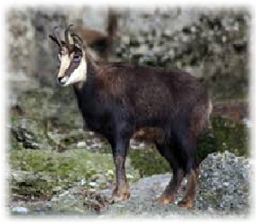

The Rupicapra is a subclass of mammals belonging to the family of cattle and antelope.
There are two existing species. One species is the ‘Alps’, found in mountainous areas in central and southern Europe.
The rest of the species are ‘Pyrenees’ and it’s natural habitat is the ‘Pyreness Mountains’ in southwestern Europe.
In 2014, Durham University found that Rupicapra populations are declining due to global warming and climate change.